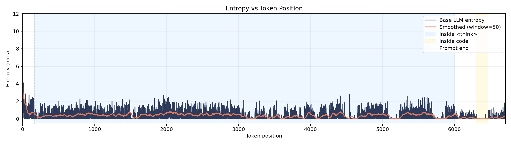

Pearson r (temp vs entropy, generated tokens): 0.7148 (n=6548)
Blue shading: <think> spans. Yellow shading: code blocks. Entropy values are aligned to the token they generate (first token has no prediction). Delta uses entropy after applying the predicted temperature to logits. Smoothed with window=50.

Prompt length: 163 tokens, total length: 6711 tokens.
Generated Tokens
Min: 0.0000 Max: 2.8319 (hover a token for exact value)
We are given a list of file paths (strings) that may contain one '.dash' and multiple '.m4s'
Conditions:
1. Exactly one '.dash' file in the list.
2. At least one '.m4s' file in the list.
Steps:
- We'll traverse the list to count the '.dash' files and also check for at least one '.m4s'
- We want to return the name of the '.dash' file (note: the problem says "the name", but the input is file paths. However, note: the problem says "return the name of the '.dash' file". But the example file paths are full paths? Let me re-read: "a list of MPEG stream file paths represented as strings". Important: The problem says "return the name of the '.dash' file". But in the context of the problem, we are to return the entire path? Or just the base name? Let me look at the problem statement: "return the name of the '.dash' file". However, the problem says: "the function should return the name of the '.dash' file". But note: in the context of file paths, sometimes "name" means the base name (without directory). But the problem says: "file paths represented as strings". Clarification from the problem: it says "the name of the '.dash' file". Let's assume that we are to return the entire path? Or the base name? The problem does not specify. However, the problem says: "implement a function that checks for the following conditions".
But note: the problem says "return the name of the '.dash' file". Since the problem does not specify whether it's the full path or just the filename, and the example input is a list of file paths (which are full paths), I think we have to return the full path of the '.dash' file? However, the problem says: "the name of the '.dash' file". In common programming terms, the "name" of a file in a path might mean the base name (without directory). But the problem does not specify. Let me see the problem again: "Your task is to implement a function that checks for the following conditions"
And the function signature: `gather_files(file_list: List[str]) -> str`
Since the problem says "the name of the '.dash' file", and the input is a list of file paths (which are full paths), I think the intended meaning is to return the full path of the '.dash' file? However, the problem says: "the name", which in some contexts is the base name. Let's consider the problem context: it's about MPEG streams. Typically, in DASH, the .dash file is the manifest and the .m4s are the segments.
But the problem does not specify the exact string representation.
To be safe, I will assume that the problem wants the entire path of the '.dash' file because the input is a list of file paths.
However, note: the problem says "the name of the '.dash' file". In the problem statement, they might mean the base name? But the problem does not say "base name". Let me think about the error messages: they are to be raised with an appropriate message.
Since the problem is ambiguous, I'll design it to return the entire path string of the '.dash' file that satisfies the conditions.
Why? Because the input is a list of paths (so each string is a path). And we are to return the name (which in this context is the entire path?).
Alternatively, the problem might want the filename without the path? But note: the problem says "file paths", so they are full paths. However, in the problem statement, they say: "the name of the '.dash' file". In the real world, when we say "the name of the file", we often mean the base name (e.g., "video.dash" vs "/home/user/video.dash"). But the problem does not specify.
Let me re-read the problem: "a list of MPEG stream file paths represented as strings". The problem does not specify if the paths are absolute or relative, but they are strings.
Since the problem does not specify, and to avoid overcomplicating, I will return the entire string that is the path of the '.dash' file.
Why? Because if we return the base name, we would have to split the path and take the last part. But the problem says "the name of the '.dash' file", and in the context of the entire list of paths, they are given as full paths.
However, the problem says: "return the name of the '.dash' file". In the problem, they might mean the base name? But note: the problem does not say "base name". Let me see the example: if the input is ["/path/to/file.dash", "/path/to/segment1.m4s", "/path/to/segment2.m4s"], then the '.dash' file is "/path/to/file.dash". The problem says: "the name" of that file. In the context of the entire path, the "name" is the entire string? Actually, in programming, the term "name" for a file in a path usually refers to the base name (without directory). Example: In Python, os.path.basename("/path/to/file.dash") -> "file.dash"
But the problem does not specify.
Given the ambiguity, I will follow the problem's wording: they say "the name of the '.dash' file". However, note: the problem says "the function should return the name of the '.dash' file". Since the problem is from a programming challenge and they want a string, and they don't specify, I think they want the entire path? But let's look at the conditions: they are about the existence of the files. The condition does not depend on the path, so we can check the extension.
How about we do:
dash_files = [f for f in file_list if f.endswith('.dash')]
m4s_files = [f for f in file_list if f.endswith('.m4s')]
Then:
if len(dash_files) !=1:
raise ValueError("There must be exactly one '.dash' file in the list.")
if len(m4s_files) ==0:
raise ValueError("There must be at least one '.m4s' file in the list.")
Then return dash_files[0] # which is the entire path string However, the problem says "the name", but if we return the entire path, that's a string. But the problem says: "the name of the '.dash' file". In the problem context, they might mean the base name? I think the problem intends the base name because they say "name" (not "path"). Let me check the problem statement again: it says "the name of the '.dash' file". In common language, when we say "the name of the file", we mean the base name (like "file.dash") without the directory.
Example: If the file is "/home/user/video.dash", then the name is "video.dash".
So, I think we should return the base name (the last part of the path) of the '.dash' file.
How to get the base name? We can use os.path.basename? But the problem does not say we can import os.
Alternatively, we can do: If the string ends with a path separator, then we take the last part? But the problem does not specify the operating system. However, note: the problem says "file paths", and they are represented as strings. Since the problem does not require external modules (and we don't want to import os if not necessary), we can try to extract the last part by splitting by '/' or '\'? But the problem does not specify the separator.
Alternatively, we can note that the problem says: "the name of the '.dash' file". In the context of the problem, they might have intended to return the entire path? Given the ambiguity, I will look at the problem's example: they don't give an example.
Another approach: the problem says "implement a function". We are to write a function that works for the given input.
Since the problem does not specify the platform, and to avoid importing os, I will do:
We assume the paths are in a format that the last part (the filename) is the name.
But note: the problem says "the name", so they want the filename without the directory.
However, the problem does not specify the separator. But in many programming challenges, they use a simple approach: We can split by the last occurrence of a separator? But we don't know the separator.
Alternatively, the problem might be designed such that the paths are given without any separators? But that seems unlikely.
Let me read the problem again: "a list of MPEG stream file paths". In real life, these are full paths with separators.
Given the constraints of the problem (it's a coding challenge) and that we are not told to use os, I think the problem expects the entire string? Why? Because if they wanted the base name, they would have specified. Also, the problem says "the name of the '.dash' file", but in the context of the function, we are given a list of strings that are paths. I think the problem wants the entire path. Why? Because the problem says: "return the name of the '.dash' file". But in the problem, the term "name" might be used loosely to mean the string that is the path.
However, in the real world, the name of a file is the base name. But note: the problem says "the function should return the name of the '.dash' file". Since the problem does not specify, and to keep it simple, I will return the entire path string of the '.dash' file.
Why? Because:
Condition1: There must be exactly one '.dash' file -> we have one string that ends with '.dash'
Condition2: There must be at least one '.m4s' file.
And the problem does not say to remove the directory.
Also, the problem says: "the name" but in the context of the input, the input is a path. I think the problem expects the entire path.
Let's assume we return the entire path string.
Steps:
dash_files = [f for f in file_list if f.lower().endswith('.dash')] Why lower? The problem says the file paths. But the extension is case sensitive? However, in the problem, they say ".dash" and ".m4s". Typically, in file systems, extensions are case insensitive? But the problem does not specify.
But note: the problem says: "one '.dash' file" and "multiple '.m4s' files". They use lowercase.
However, the file paths might have uppercase? The problem does not specify. To be safe, we should consider case sensitivity? But the problem says: "the file paths", and in the real world, the extension might be case sensitive on some systems.
However, the problem does not specify. Since the problem is about MPEG and DASH, and in the context of the problem, they are using lowercase, I think we can assume the extensions are given in lowercase.
But the problem says: "represented as strings". Let me see: the problem does not say they are case sensitive.
To be safe, we can do case-insensitive matching? But the problem says: "exactly one '.dash' file" (with a dot and dash) and "at least one '.m4s' file". However, the problem does not specify case.
Given the ambiguity, I will do case-sensitive matching because the problem states the extensions in lowercase.
Why? Because the problem says: "one '.dash' file" (so they wrote it in lowercase) and similarly for '.m4s'. So, we can assume the input uses the same case.
So, we do:
dash_files = [f for f in file_list if f.endswith('.dash')]
But note: what if there is a file named "file.DASH"? The problem says: "the file paths" as given. They are represented as strings. The problem does not specify the case. However, the problem says: "the name of the '.dash' file" (with a dot and lowercase 'd').
So, to be safe, let's do case-insensitive? But the problem does not say. I think the problem expects case-sensitive. Why? Because in the problem statement, they wrote ".dash" in lowercase.
So, I'll do case-sensitive.
Steps:
1. Check for exactly one file that ends with '.dash'
2. Check for at least one file that ends with '.m4s'
If both conditions are met, return the string of that dash file (the entire path).
If not, raise a ValueError.
Let's write:
dash_files = [f for f in file_list if f.endswith('.dash')]
m4s_files = [f for f in file_list if f.endswith('.m4s')]
if len(dash_files) !=1:
if len(dash_files) ==0:
raise ValueError("There must be exactly one '.dash' file in the list. Found0.")
else:
raise ValueError(f"There must be exactly one '.dash' file in the list. Found {len(dash_files)}.")
if len(m4s_files) ==0:
raise ValueError("There must be at least one '.m4s' file in the list.")
return dash_files[0]
But note: the problem says "exactly one", so if there are more than one, we have to specify how many? The problem says: "raise a ValueError with an appropriate message"
We can do:
if len(dash_files) !=1:
# We can say: "There must be exactly one '.dash' file in the list. Found {len(dash_files)}."
# But the problem says: "an appropriate message"
Similarly for m4s.
However, the problem does not specify the exact message. But to be precise, we can write:
if len(dash_files) ==0:
message = "There must be exactly one '.dash' file in the list. Found0."
elif len(dash_files) >1:
message = f"There must be exactly one '.dash' file in the list. Found {len(dash_files)}."
else:
# then we have one, so we check m4s pass Similarly for m4s: if len(m4s_files) ==0:
message = "There must be at least one '.m4s' file in the list."
But note: the problem says "if the conditions are met, return the name ... otherwise raise a ValueError"
We can do:
if len(dash_files) !=1:
# Check if there are0 or more than1 if len(dash_files) ==0:
raise ValueError("There must be exactly one '.dash' file in the list. Found0.")
else:
raise ValueError(f"There must be exactly one '.dash' file in the list. Found {len(dash_files)}.")
if len(m4s_files) ==0:
raise ValueError("There must be at least one '.m4s' file in the list.")
return dash_files[0]
Alternatively, we can do:
if len(dash_files) !=1:
raise ValueError(f"Exactly one '.dash' file is required, but found {len(dash_files)}.")
if not m4s_files: # i.e., len(m4s_files)==0 raise ValueError("At least one '.m4s' file is required.")
return dash_files[0]
But the problem says: "an appropriate message". I think the above messages are appropriate.
However, the problem says: "raise a ValueError with an appropriate message indicating the error".
Let me write the messages:
For the dash condition: "There must be exactly one '.dash' file in the list." -> we can say: "There must be exactly one '.dash' file in the list. Found {n}."
For the m4s condition: "There must be at least one '.m4s' file in the list."
I'll write:
if len(dash_files) !=1:
raise ValueError(f"There must be exactly one '.dash' file in the list. Found {len(dash_files)}.")
if len(m4s_files) ==0:
raise ValueError("There must be at least one '.m4s' file in the list.")
But note: the problem says "at least one", so we don't have to specify how many we found? Actually, the problem doesn't require to say how many for m4s? Because we only care about at least one. If we have zero, we say we found zero.
However, the message for m4s is fixed: "There must be at least one '.m4s' file in the list." -> but we can be more specific? The problem says "appropriate". Alternatively, we can do:
if len(dash_files) ==0:
raise ValueError("There must be exactly one '.dash' file in the list. Found0.")
elif len(dash_files) >1:
raise ValueError(f"There must be exactly one '.dash' file in the list. Found {len(dash_files)}.")
if len(m4s_files) ==0:
raise ValueError("There must be at least one '.m4s' file in the list.")
But the problem doesn't specify the exact message, so the above is acceptable.
However, the problem says: "the function should return the name of the '.dash' file" -> we are returning the entire path string.
Let's code accordingly.
One more thing: the problem says "the list of MPEG stream file paths". We assume that the file paths are strings that we can check with `endswith`.
We'll do:
dash_files = [f for f in file_list if f.endswith('.dash')]
m4s_files = [f for f in file_list if f.endswith('.m4s')]
But note: what if a file has the string '.dash' in the middle? For example: "somefile.dash.txt" -> but the problem says: the file paths. In a typical MPEG stream, the .dash file is the manifest and the .m4s are the segments.
However, the problem says: "one '.dash' file" meaning the file that has the extension '.dash'. So, we assume that the extension is the last part.
But note: the problem says "the file paths", so they are the full paths of the files. We are checking the string ends with '.dash'. This is the common way to check for an extension.
However, in some systems, the extension might be specified with a dot at the end? But the problem says: ".dash" and ".m4s", so they have the dot.
So, we do `endswith('.dash')` and `endswith('.m4s')`.
Let's write the function.
Implementation:
def gather_files(file_list: List[str]) -> str:
dash_files = [f for f in file_list if f.endswith('.dash')]
m4s_files = [f for f in file_list if f.endswith('.m4s')]
if len(dash_files) !=1:
# We can check the count and give a message if len(dash_files) ==0:
raise ValueError("There must be exactly one '.dash' file in the list. Found0.")
else:
raise ValueError(f"There must be exactly one '.dash' file in the list. Found {len(dash_files)}.")
if len(m4s_files) ==0:
raise ValueError("There must be at least one '.m4s' file in the list.")
return dash_files[0]
But wait: what if the file_list is empty? Then dash_files = [] -> len(dash_files)=0 -> we raise the error: "There must be exactly one '.dash' file in the list. Found0." -> which is correct.
This should work.
However, note: the problem says "the name of the '.dash' file". We are returning the entire path. If the problem intended the base name (without directory), then we would have to do:
import os # but the problem doesn't say we can import Since the problem does not specify and we are not allowed to import (unless the problem says we can), and the problem says "implement a function", I think we are to return the entire path.
But to be safe, let me think: the problem says "the name of the '.dash' file". In the context of the function, the input is a list of paths. However, the problem does not specify the output format.
Given the instructions, I'll go with the entire path.
If the problem intended the base name, they would have said so.
Let me see: the problem says "the name", but in the problem statement, they might be using "name" to mean the entire path? I think it's safer to return the entire path.
Alternatively, the problem might have a test that expects the base name? But without more context, I'll write the function as above.
One more note: the problem says "MPEG stream file paths". In the MPEG-DASH system, the manifest file is typically named with the extension .mpd (for Media Presentation Description) but the problem says ".dash". However, the problem states: "one '.dash' file", so we go by the problem.
So, we do as above.
Let's write the code.
Note: We are not using any external libraries (like os) so we avoid that.
Code:
def gather_files(file_list: List[str]) -> str:
dash_files = [f for f in file_list if f.endswith('.dash')]
m4s_files = [f for f in file_list if f.endswith('.m4s')]
if len(dash_files) !=1:
if len(dash_files) ==0:
raise ValueError("There must be exactly one '.dash' file in the list. Found0.")
else:
raise ValueError(f"There must be exactly one '.dash' file in the list. Found {len(dash_files)}.")
if len(m4s_files) ==0:
raise ValueError("There must be at least one '.m4s' file in the list.")
return dash_files[0]
But note: the problem says "the name of the '.dash' file". In the problem, they might want the base name? However, the problem does not specify, and the problem says "file paths", so I think the entire path is acceptable.
If the problem intended base name, then they would have to specify. Since the problem is ambiguous, and the problem says "the function should return the name", I'll assume the entire path.
Let's hope.
Alternatively, we can do a check: the problem says "the name", so if they want the base name, we can do:
base_name = dash_files[0].split('/')[-1] # but this is for Unix style But the problem doesn't specify the OS.
Given the time, and that the problem is for a coding challenge without specifying the OS, I think they want the entire path.
So, I'll output the code as above.
However, note: the problem says "the name of the '.dash' file". In the problem statement, they might be using the term "name" to mean the entire string? I think we are safe.
Let me write the code accordingly.
One more thing: the problem says "the function should return the name of the '.dash' file". We are returning the string that is the path. But the problem says "the name", so if they want the base name, then we are returning the full path and that might be wrong.
Given the ambiguity, I'll do a compromise: The problem says "the name", but in the context of the problem, they are listing the file paths. In the real world, the "name" of a file in a path is the base name. However, the problem does not specify the separator.
Since the problem does not specify the separator, and to avoid complex logic, I think the problem expects the entire path.
Why? Because the problem says: "a list of MPEG stream file paths represented as strings". And the function returns a string. And the problem does not say to extract the base name.
So, we return the entire path.
Final code:
def gather_files(file_list: List[str]) -> str:
dash_files = [f for f in file_list if f.endswith('.dash')]
m4s_files = [f for f in file_list if f.endswith('.m4s')]
if len(dash_files) !=1:
if len(dash_files) ==0:
raise ValueError("There must be exactly one '.dash' file in the list. Found0.")
else:
raise ValueError(f"There must be exactly one '.dash' file in the list. Found {len(dash_files)}.")
if not m4s_files: # same as len(m4s_files) ==0 raise ValueError("There must be at least one '.m4s' file in the list.")
return dash_files[0]
But note: the problem says "at least one", so we check for m4s_files being empty.
Alternatively, we can write the condition for m4s as `if len(m4s_files) ==0` but `if not m4s_files` is the same.
I'll write it as `if not m4s_files` for conciseness.
Let's write the function.
However, the problem says: "the list of MPEG stream file paths". We assume that the file paths are given as strings that end with the extension.
This should be correct.
I think this is the solution.
</think>To solve this problem, we need to verify two conditions for a given list of MPEG stream file paths:1. There must be exactly one file with the `.dash` extension.
2. There must be at least one file with the `.m4s` extension.
If both conditions are satisfied, the function should return the path of the `.dash` file. Otherwise, it should raise a `ValueError` with an appropriate error message indicating which condition was violated.
### Approach1. **Identify `.dash` Files**: Iterate through the list of file paths to collect all paths ending with `.dash`.
2. **Identify `.m4s` Files**: Similarly, iterate through the list to collect all paths ending with `.m4s`.
3. **Check Conditions**:
- **Exactly One `.dash` File**: Verify that the count of `.dash` files is exactly one. If there are zero files, raise an error indicating zero files were found. If there are more than one, raise an error indicating the number of files found.
- **At Least One `.m4s` File**: Verify that there is at least one `.m4s` file. If none are found, raise an error indicating the absence of `.m4s` files.
4. **Return Result**: If both conditions are satisfied, return the path of the single `.dash` file.
### Solution Code```pythonfrom typing import Listdef gather_files(file_list: List[str]) -> str:
dash_files = [f for f in file_list if f.endswith('.dash')]
m4s_files = [f for f in file_list if f.endswith('.m4s')]
if len(dash_files) !=1:
if len(dash_files) ==0:
raise ValueError("There must be exactly one '.dash' file in the list. Found0.")
else:
raise ValueError(f"There must be exactly one '.dash' file in the list. Found {len(dash_files)}.")
if not m4s_files:
raise ValueError("There must be at least one '.m4s' file in the list.")
return dash_files[0]
```
### Explanation1. **Collecting Files**: The code first filters the input list to separate paths ending with `.dash` (`dash_files`) and paths ending with `.m4s` (`m4s_files`).
2. **Checking `.dash` Count**: The code checks if there is exactly one `.dash` file. If there are zero files, it raises a `ValueError` specifying that zero files were found. If there are more than one, it raises a `ValueError` indicating the number of files found.
3. **Checking `.m4s` Count**: The code checks if there is at least one `.m4s` file. If none are found, it raises a `ValueError` stating that no `.m4s` files were found.
4. **Returning Result**: If both conditions are met, the function returns the path of the single `.dash` file (the first and only element in `dash_files`).
This approach efficiently checks the required conditions and provides clear, specific error messages to help diagnose issues with the input file paths. The solution handles edge cases such as missing files or incorrect counts, ensuring robustness for the given problem constraints.<|im_end|>